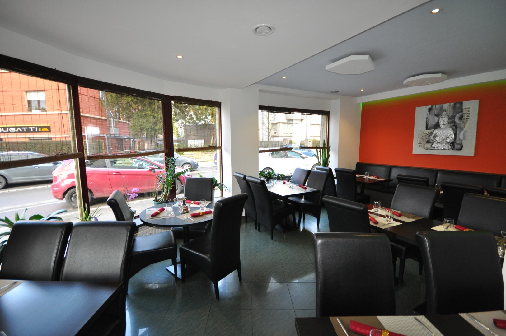

À propos
Venez vous régaler dans un cadre chaleureux et grâce à une
cuisine forte en caractère et en goût. Nous avons deux chefs très expérimentés.
Un chef est spécialisé dans la cuisine thaïlandaise et vient de Chiang Mai.
Il vous fera découvrir sa passion à travers des plats typiques thaïlandais.
Le deuxième chef vient de Hong Kong et est spécialisé dans la cuisine chinoise.

Type de restaurant
Chinoise et ThailandaiseServices
Accès wifi gratuit, Terrasse, Terrasse couverte, Parking payant à proximitéMoyens de paiements
Apple Pay, Ticket Restaurant, Eurocard/Mastercard, Espèces, Visa, American Express, Carte Bleue.jpg)
Horaires d'ouverture
Lundi
Mardi
Mercredi
Jeudi
Vendredi
Samedi
Dimanche
Fermé
11:50 - 14:30 | 18:00 - 22:15
11:50 - 14:30 | 18:00 - 22:15
11:50 - 14:30 | 18:00 - 22:15
11:50 - 14:30 | 18:00 - 22:15
11:50 - 14:30 | 18:00 - 22:15
11:50 - 14:30 | 18:00 - 22:15